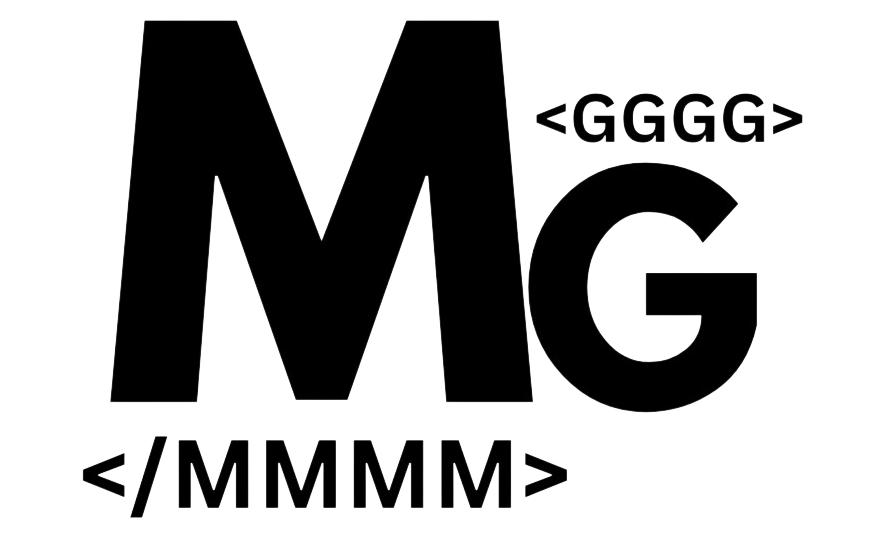
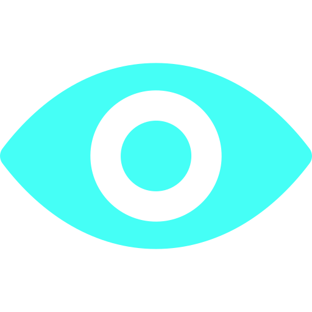
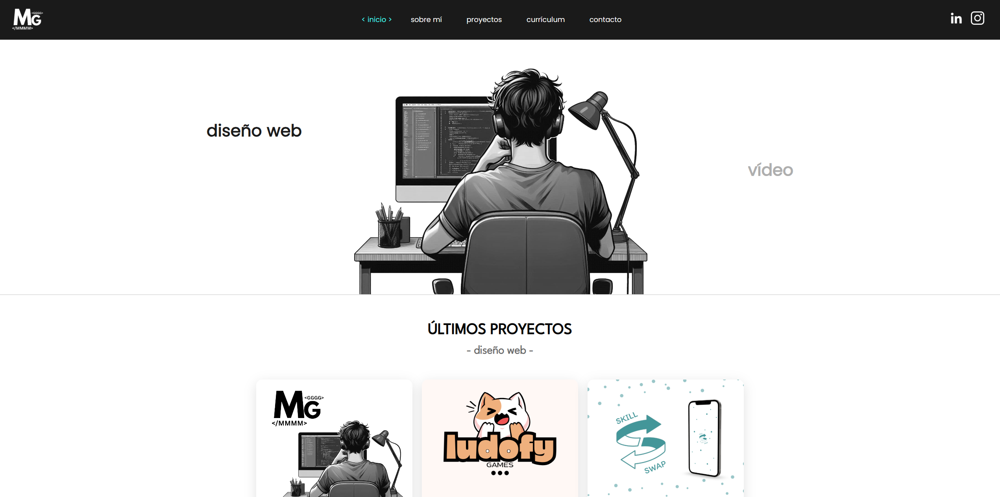
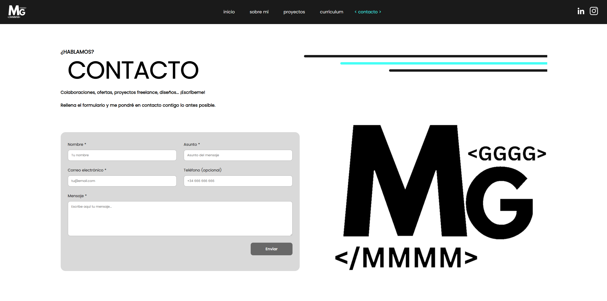
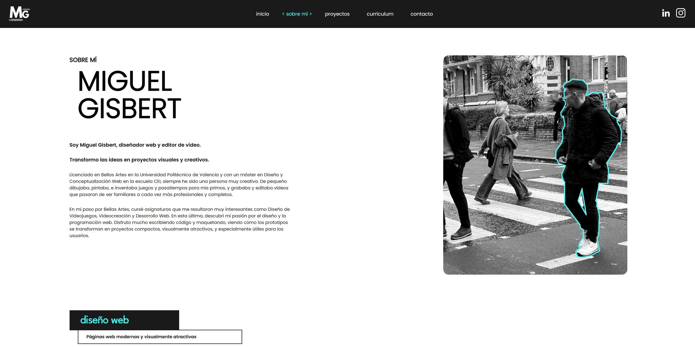
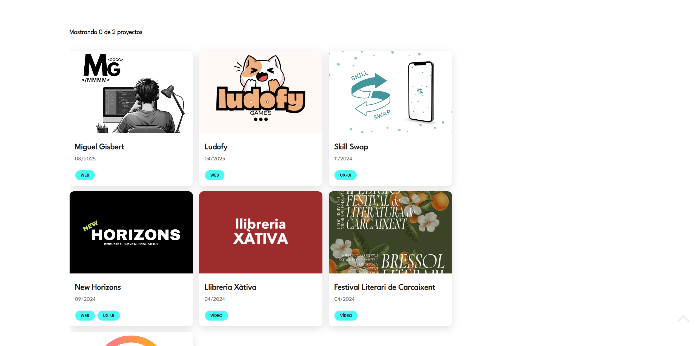

Caso de Estudio: Diseño de Interfaz y Programación Frontend en Código Puro


OBJETIVO DEL PROYECTO
Ideación y desarrollo de mi página web personal a modo de portfolio. Diseño de la identidad visual y de su logotipo, y maquetación de un prototipo previo haciendo uso de Figma. Se trata de un proyecto web personal utilizado como plataforma de difusión de mi portfolio y mi currículum. Se buscó dotar a la web de una cierta profesionalidad, adaptándola a los distintos dispositivos digitales (móviles, tabletas, ordenadores de escritorio y portátiles), haciéndola accesible para los usuarios y apostando por un apartado visual minimalista pero elegante. La página web final ha sido realizada con lenguajes HTML5, CSS3 y Javascript.
PROCESO DE TRABAJO
1
Se trabajó en la creación de la identidad visual de la web. Esta vez, el objetivo no era vender un producto ni dar forma a la imagen de una empresa o cliente, sino darme a conocer como diseñador y desarrollador web, así como editor de vídeo, mostrar mis proyectos y trabajos realizados, dar visibilidad a mi currículum y trabajar en un proyecto denso y complejo, completar el reto que me había marcado de desarrollar mi propia web desde cero. Fue todo un desafío y me sentí muy cómodo pudiendo diseñar cada apartado de la web, cada sección o botón a mi gusto. Seleccioné una paleta de colores sencilla pero llamativa, basada en el contraste de blanco (#ffffff) y negro o gris oscuro (#1A1A1A), añadiendo un tercer color azul eléctrico (#45FFF6) que utilicé en ciertos textos más relevantes o destacados, en los menús, o para el "hover" de algunos botones y cajas. Por último, se incluyó un cuarto color, un tono gris claro (#AEAEAE) para el fondo del footer o para algunos textos o cajas poco relevantes y en segundo plano. También se seleccionaron dos tipografías que se irían intercalando en toda la web, que son la Poppins y la League Spartan, ambas en tamaños de 12, 14, 16, 18, 20 y 24 píxeles, aunque también se utilizaron tamaños superiores a 30px para los titulares más importantes.
La página web se divide en las siguientes páginas o secciones:
Inicio
Sobre mí
Proyectos
Currículum
Contacto
2
Se utilizó Figma para desarrollar el prototipo de la web. Aunque el diseño final acabó por no ser idéntico al prototipo, gracias a este diseño previo fue mucho más sencillo concretar el proyecto final, con el concepto y las ideas siempre presentes. Algunas imágenes e iconos de la web se obtuvieron de bancos de imágenes gratuitos o se hizo uso de la Inteligencia Artificial, aunque la mayoría de ellas fueron capturadas manualmente con un dispositivo móvil o una cámara digital.
3
Una vez finalizado el prototipo, se comenzó a programar la web con HTML, CSS y JavaScript. Se utilizó Visual Studio Code como editor de código, y GIMP y Canva como herramientas de diseño gráfico. Se diseñó la página principal (Inicio), que incluye un elegante carousel con animación de slide lateral donde se van mostrando los últimos proyectos realizados, tanto de diseño web como de edición de vídeo. Se diseñaron y maquetaron el resto de páginas, así como el footer (genérico y común a todas ellas) y se enlazaron las unas con las otras mediante un menú superior en línea (formato desktop) y hamburguesa (formato móvil). Se implementó el formulario de contacto y se diseñaron por separado las páginas de proyecto, cada una con un diseño único y una temática específica. De esta manera, a través de la sección de "proyectos", el usuario puede ir accediendo a los distintos trabajos realizados, enlazados con sus respectivas webs y prototipos, que son abiertos y se pueden consultar con un simple click.
4
Por último, tras finalizar la web y terminar de diseñar todas las páginas individuales de los proyectos, se publicó la web y se difundió en redes sociales (Instagram, LinkedIn, WhatsApp).
PROGRAMAS Y SOFTWARE
HTML5
CSS3
Javascript
Visual Studio
Canva
Figma
GIMP
GALERÍA DE IMÁGENES




